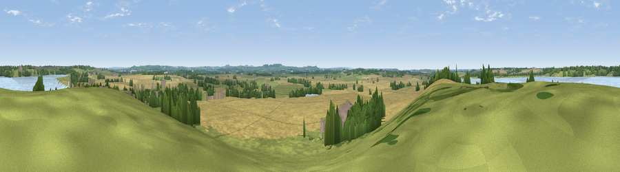

Viewpoint near Draycote
#26274 in England · top 31% of its area beats it · near Draycote · access?Where it is
The exact computed spot (SP 46275 69125). Click the marker for map links.
Public access: no public right of way or access land is recorded at this exact spot — it may be on private land. Computed from Natural England's CRoW access layer and OpenStreetMap rights of way — not the legal definitive map. Always verify locally.
The view, rendered

A 360° render of this exact spot computed from the terrain model, tree cover and land cover — summer colours, afternoon light, calibrated against photographs of famous viewpoints. Real trees, hedges and buildings will differ in detail.
The panorama
Grey silhouette: terrain skyline in each direction (720 bearings, Earth curvature and refraction included). Dashed green: skyline with trees (+15 m) and buildings (+8 m) as obstacles. Blue strip: how far the ground is visible on each bearing.
Where the view opens
Wedge length = distance to the farthest visible ground on that bearing (vegetation-aware). Rings at 10, 25 and 50 km.
What fills the view
51% cropland · 30% grassland · 10% water · 7% woodland · 2% built-up
Angular shares of the visible panorama (visual magnitude), not map area. Landscape diversity 0.52 (0–1 Shannon).
Key numbers
More beautiful places nearby
The staircase of upgrades: each row has a higher view potential than everything closer. Driving times are estimates from straight-line distance, calibrated against real road routing — check an actual route before setting out.
| Place | Direction | Drive | Score |
|---|---|---|---|
| Viewpoint near Onley | ENE · 6 km | ~13 min | 56.1 |
| Viewpoint near Lower Shuckburgh | SSE · 8 km | ~16 min | 59.5 |
| Viewpoint near Lower Shuckburgh | SSE · 8 km | ~16 min | 61.6 |
| Big Hill - Staverton Clump | SE · 12 km | ~22 min | 68.4 |
| Viewpoint near Northend | SSW · 18 km | ~32 min | 69.7 |
| Viewpoint near Northend | SSW · 19 km | ~32 min | 70.3 |
| Viewpoint near Radway | SSW · 22 km | ~37 min | 71.7 |
| Viewpoint near Ilmington | SW · 37 km | ~56 min | 72.6 |
52.31829, -1.32255 · source: screening · position refined by local search. Computed location — check access rights before visiting.